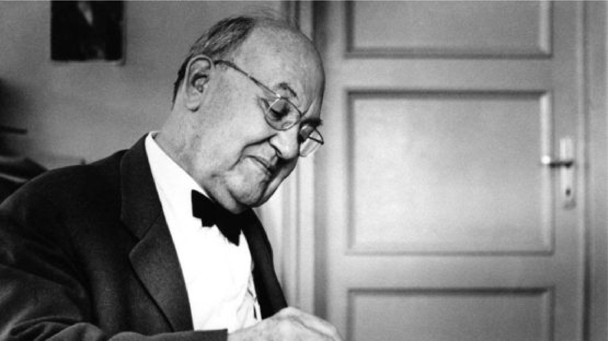
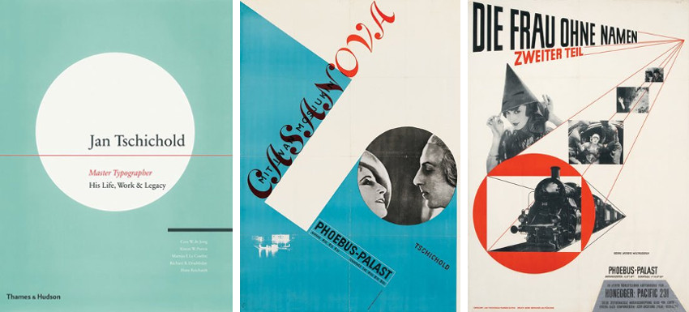

Introduction

Jan Tschichold is widely regarded as a master Typographer of the 20th Century. A trained Calligrapher and Designer, his commitment to Typography can be seen throughout his entire career. He made an incredibly significant impact on the development of Typography and Graphic Design. This essay will be investigating how Jan Tschichold changed Typography and if he should be considered an influential figure in design.
Jan Tschichold was born on the 2nd of April 1902 in Leipzig, Germany. His rich artistic background can be traced to his father who was a sign-writer, trained in Calligraphy. Although he did not receive much formal art education, the training Tschichold would receive from his father would come to set him apart from his contemporary typographers. From a young age, Tschichold was interested in Design, his first career a calligrapher for advertisements. However, it wasn’t until Tschichold would discover a Bauhaus exhibition in 1923 that he would become entirely captivated with the Bauhaus’ new developments in Design, kickstarting his interest in the new wave of Typography.
The Bauhaus was a revolutionary school of art that focused heavily on student teacher relationships and aimed to end the schism between Industrial Design and Artistry. Many Famous artists and Designers would come from the Bauhaus including Wassily Kandinsky, Paul Klee and Moholy-Nagy and the work that derived from the Bauhaus was experimental, impactful, and forward thinking. The brilliance of the aims of the Bauhaus is embodied in the slogan, ‘Art and Technology, a new unity’. For Tschichold, a young Designer, the work within the exhibition would leave him, "in a state of great agitation", as he remembered in his 1972 testament. Very quickly, Tschichold became a modernist convert filled with a new desire to abandon the regimental, traditional teaching in calligraphy he had grown up with in favor of newer ideas, abandoning serifs in typefaces and embracing simpler designs with the central focus always on clarity of message. Furthermore, Tschichold came into contact with both Moholy-Nagy and El Lissitzky further inspiring him to embrace the ideals of Russian Constructivism, even going as far as changing his first name to Iwan.
The new Typography

Possibly some of Tschichold’s most influential work would derive from his involvement with “The new Typography movement” in the 1920s and 30s. This movement would bring graphics and information design to the forefront of the artistic avant-garde in Central Europe. With their rejection of Traditional arrangement of typefaces, Designers defined the movement with striking geometrical, sans serif typefaces and asymmetrical compositions that always considered the accurate communication of information the central focus of design. In 1927, Jan Tschichold joined a group of Designers called, ‘The circle of new advertising Designers’, and It was this group that would formulate the highly influential principles of the New Typography. Tschichold joined this group in 1927, and from here his influence really began to develop. Tschichold became the spokesperson for this group, immortalizing their ideas through lectures and writing. Their principles of the new Typography are as follows:
- Asymmetric balance of elements
- Content Designed by hierarchy
- Intentional white space utilization
- Sans serif Typography
In 1928, Jan Tschichold consolidated the New Typography movement in paper when he wrote the highly influential ‘Die Neue Typographie’. This book would come to be one of the main pieces of text on modern design. In the years leading up to the publishing of this book, Tschichold made contact with many modernist Designers in Europe, including Kurt Schwitters, El Lissitzky, László Moholy-Nagy, Herbert Bayer, Piet Zwart, and Ladislav Sutnar. Because of this, this text would contain important examples of their work, some of which would become incredibly famous after the book was published. As well as this, the book became a manual for modern Designers and to this day is held in high regard. Tschichold’s work in ‘Die Neue Typographie’ would define an entire movement in Typography and would document an incredibly important shift towards what is now known as modern Design. Therefore, there is no doubt that Tschichold’s work changed the path of modern typography and therefore should be considered as a highly influential figure in Design.
Later life in Penguin Design
In 1946, the founder of Penguin books was looking to redesign and professionalize the company’s Image. Penguin books had revolutionized the industry by selling good books at a reasonable price. They were highly successful, selling 3 million copies of books at six pence each in their first year alone. At this time, Tschichold was looking for Design work in London, after fleeing Europe under threat from the Nazi regime.